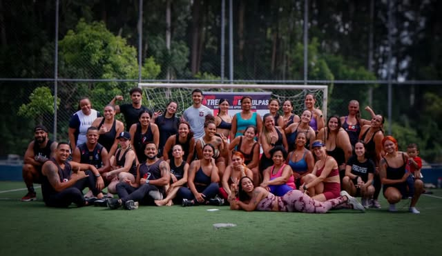
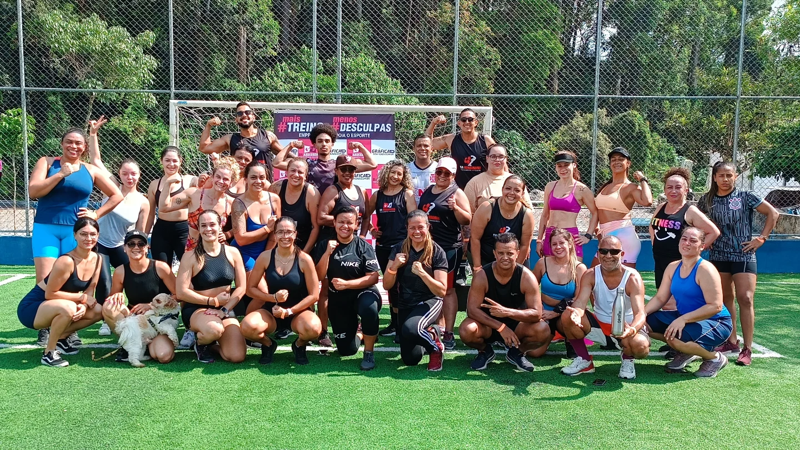
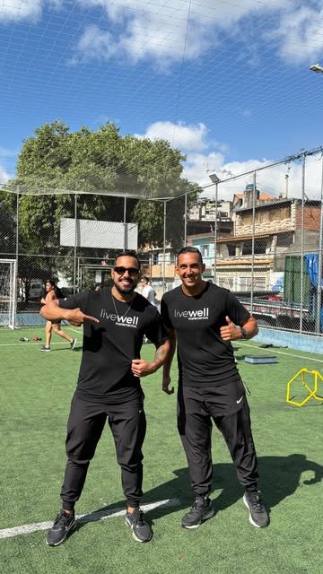
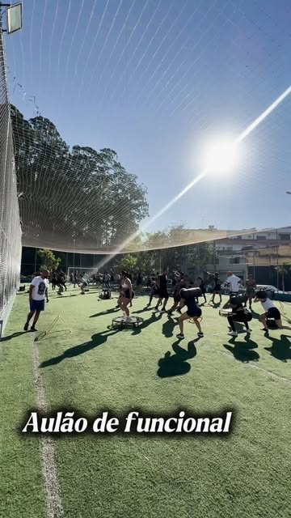

Treino funcional reúne movimento, orientação e comunidade na quadra
No dia 12 de julho, a quadra da Arena William Ramos recebeu uma manhã de treino funcional conduzida pelos professores Bruno Resende e Rafael Resende, da BR Assessoria. A atividade reuniu participantes com diferentes níveis de experiência em um ambiente marcado por movimento, incentivo e convivência.
Ao longo do encontro, os profissionais de Educação Física acompanharam a execução dos exercícios, explicaram cada etapa e orientaram os participantes sobre postura, ritmo e controle dos movimentos. Esse acompanhamento ajuda a adaptar a atividade às condições de cada pessoa e torna a prática mais organizada e segura.
O treino em quadra permitiu combinar exercícios de força, mobilidade, coordenação, agilidade e condicionamento. Em formato de circuito, as tarefas criaram uma dinâmica coletiva: cada participante pôde executar os movimentos no próprio ritmo, enquanto os professores faziam correções e incentivavam a continuidade.
Mais do que completar séries, um dia como esse também aproxima as pessoas da atividade física. Treinar em grupo cria oportunidades de troca, fortalece o compromisso com a rotina e transforma o espaço esportivo em um ponto de encontro. A energia coletiva aparece nos incentivos durante os exercícios e na celebração compartilhada ao final.
A prática regular de atividade física está associada a benefícios físicos e mentais, incluindo melhora do condicionamento, do bem-estar e da saúde geral. A Organização Mundial da Saúde destaca ainda que qualquer quantidade de movimento é melhor do que nenhuma e que toda atividade conta. O ponto de partida deve respeitar experiência, condição de saúde e capacidade individual.
Por isso, o acompanhamento de profissionais de Educação Física tem valor especial: eles podem orientar a técnica, ajustar intensidade e volume e ajudar cada participante a progredir de maneira compatível com seu momento. Pessoas com dor, sintomas, condições clínicas ou que estejam retomando após uma pausa devem buscar avaliação individual antes de aumentar o esforço.
Para quem acompanhou de fora ou ainda espera o momento ideal para começar, a mensagem deixada pelo encontro é simples: não é preciso chegar pronto. Participar de atividades orientadas, conhecer novas formas de se movimentar e construir constância aos poucos pode ser um passo importante para cuidar do corpo, da saúde e da relação com o esporte.
Acompanhar @personalbracessoria Consultar orientações da OMS


{kind=link}
Comentários da reportagem